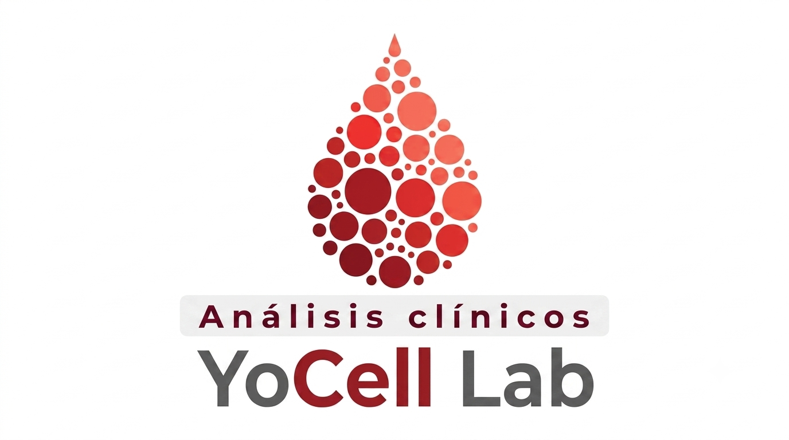

YoCell Lab · San Buenaventura, Coahuila — sube el PDF que te regresa el laboratorio de referencia y extrae los analitos automáticamente

1. Selecciona al paciente
2. Estudio
📄
Haz clic aquí o arrastra el PDF
Solo funciona con PDFs que tengan texto real (no fotos/escaneos)
Llena lo que observaste — ya vienen precargados los valores normales típicos, solo cambia lo que salga distinto.
3. Revisa y corrige antes de guardar
La lectura automática puede fallar en algún renglón — revisa cada fila contra el PDF original antes de guardar. Puedes editar cualquier casilla, agregar filas o borrarlas.